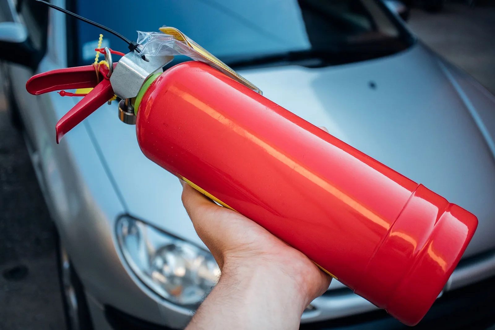

▲ 차량용 소화기. 용기에 "자동차 겸용" 표시가 있어야 법정 소화기로 인정된다
2024년 12월 1일부터 5인승 이상 승용차에도 소화기를 두어야 합니다.
그런데 지금 타고 있는 차가 대상인지부터 헷갈립니다.
결론부터 말하면, 이미 등록된 차에는 소급 적용되지 않습니다. 다만 그 차를 팔거나 사는 순간 이야기가 달라집니다.
1. 무엇이 바뀌었나
이전에도 차량용 소화기 의무는 있었습니다. 다만 대상이 7인승 이상이었습니다. 승합차와 대형 SUV 일부만 해당됐던 셈입니다.
2024년 12월 1일부터 이 기준이 5인승 이상으로 내려왔습니다. 근거는 「소방시설 설치 및 관리에 관한 법률」 제11조입니다.
| 구분 | 이전 | 2024년 12월 1일부터 |
|---|---|---|
| 대상 | 7인승 이상 | 5인승 이상 |
| 포함되는 차 | 승합차, 일부 대형 SUV | 일반 승용차 대부분 |
사실상 승용차 대부분이 대상이 됐습니다. 5인승 세단과 SUV가 여기 포함되기 때문입니다.
2. 핵심 — 소급 적용되지 않는다
가장 많이 오해되는 지점입니다. "이제 모든 차에 소화기를 넣어야 한다"고 알려졌지만, 그렇지 않습니다.
| 상황 | 의무 여부 |
|---|---|
| 2024년 12월 1일 이전에 등록해 계속 보유 중 | 의무 아님 (소급 적용 없음) |
| 시행일 이후 제작·수입·판매된 신차 | 의무 |
| 시행일 이후 소유권이 바뀌어 새로 등록 | 의무 |
📍 중고차를 사고팔 때 걸리는 지점
세 번째 항목이 실질적으로 중요합니다. 2020년식 5인승 승용차를 원래 주인이 계속 타고 있다면 의무 대상이 아닙니다. 그런데 이 차를 중고로 사서 내 명의로 이전하는 순간 자동차관리법 제6조에 따른 신규 등록이 이뤄지므로 의무 대상이 됩니다. 중고차 구매 시 챙겨야 할 항목이 하나 늘어난 셈입니다.
3. 아무 소화기나 되는 게 아니다
집에 있는 분말소화기를 트렁크에 넣어두면 될 것 같지만, 인정되지 않습니다.
차량용 소화기는 주행 중의 진동과 여름철 실내 고온을 견디도록 별도 기준으로 제작됩니다. 그래서 용기 표면에 "자동차 겸용"이라는 표시가 있어야 합니다.
| 구분 | 인정 여부 | 이유 |
|---|---|---|
| "자동차 겸용" 표시 소화기 | 인정 | 진동·고온 기준 충족 |
| 일반 분말소화기 | 불인정 | 표시가 없다 |
| 에어로졸식 소화용구 | 불인정 | 법정 소화기가 아니다 |
에어로졸식이 특히 헷갈립니다. 스프레이 형태로 간편해 차량용으로 많이 팔리지만, 법이 요구하는 소화기에는 해당하지 않습니다. 보조 수단으로 두는 것은 자유지만, 이것만 있으면 의무를 이행한 것이 아닙니다.
4. 언제, 어떻게 확인하나
설치·비치 여부는 자동차관리법 제43조에 따른 자동차 검사 때 확인합니다.
즉 도로에서 별도로 단속하는 방식이 아닙니다. 정기검사나 종합검사를 받으러 갔을 때 함께 확인되는 구조입니다. 검사를 앞두고 있다면 대상 차량인지 먼저 따져보는 편이 좋습니다.

▲ 엔진룸이 이 정도로 타면 소화기로 감당할 단계를 이미 지났다. 그래서 위치보다 판단이 먼저다 ⓒ Wikimedia Commons
5. 어디에 두어야 하나
법이 위치를 특정하지는 않지만, 실효성 면에서는 위치가 전부입니다.

▲ 차량 화재는 초기 1~2분이 갈린다. 손이 닿지 않는 곳의 소화기는 없는 것과 같다 ⓒ Wikimedia Commons
✅ 보관 위치를 정할 때
· 운전석에서 손이 닿는 곳이 원칙입니다 — 좌석 아래, 도어 포켓, 콘솔 옆
· 트렁크 깊숙한 곳은 권하지 않습니다 — 꺼내는 동안 초기 진화 시점을 놓칩니다
· 고정해 두세요 — 급제동 시 흉기가 될 수 있습니다
· 압력계 바늘이 녹색 구간에 있는지 가끔 확인합니다
· 여름철 직사광선이 닿는 대시보드 위는 피합니다

▲ 불길이 크거나 실내로 번졌다면 진화를 시도하지 말고 대피와 신고가 먼저다 ⓒ Wikimedia Commons
6. 정작 중요한 건 '끌지 말지'의 판단
소화기를 갖췄다고 모든 화재를 꺼야 하는 것은 아닙니다. 차량 화재에서 가장 먼저 할 일은 대피와 신고입니다.

▲ 대피와 후방 표시가 먼저다. 진화는 그다음 판단이다 ⓒ Wikimedia Commons
| 순서 | 행동 |
|---|---|
| 1 | 안전한 곳에 정차하고 시동을 끈다 |
| 2 | 탑승자 전원 하차 — 차에서 충분히 떨어진다 |
| 3 | 119 신고, 후방에 위험을 알린다 |
| 4 | 초기 소량의 불이고 안전이 확보됐을 때만 소화기 사용 |
📍 보닛을 활짝 열지 마세요
엔진룸에서 연기가 날 때 보닛을 완전히 열면 산소가 급격히 공급돼 불길이 커집니다. 소화기를 쓸 상황이라면 틈으로 분사하는 편이 안전합니다. 불길이 이미 크거나 실내로 번졌다면 진화를 시도하지 말고 대피하는 것이 맞습니다.
7. 정리
2024년 12월 1일부터 5인승 이상 승용차에 차량용 소화기가 의무화됐습니다. 다만 이미 등록된 차에는 소급되지 않습니다.
신차를 사거나, 중고차를 사서 명의를 이전하면 그때부터 대상입니다. 중고 거래를 앞두고 있다면 확인 목록에 넣어두세요.
소화기는 "자동차 겸용" 표시가 있어야 하고, 에어로졸식은 인정되지 않습니다. 그리고 트렁크 깊숙이 넣어둔 소화기는 실제 상황에서 없는 것과 같습니다.